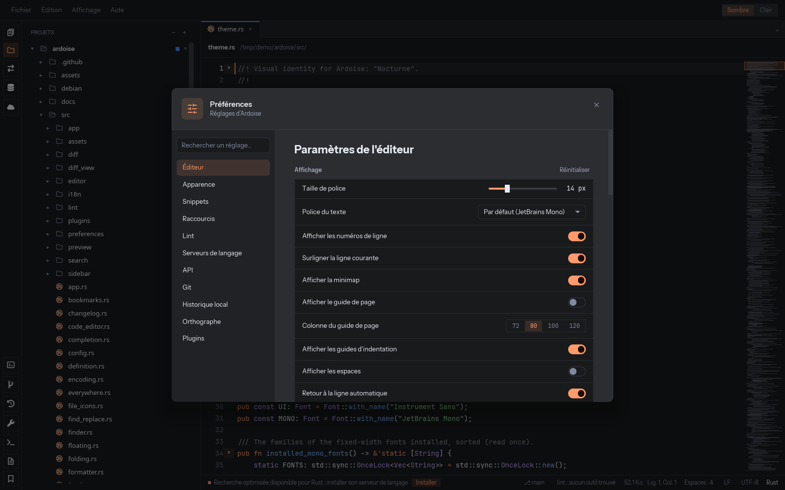
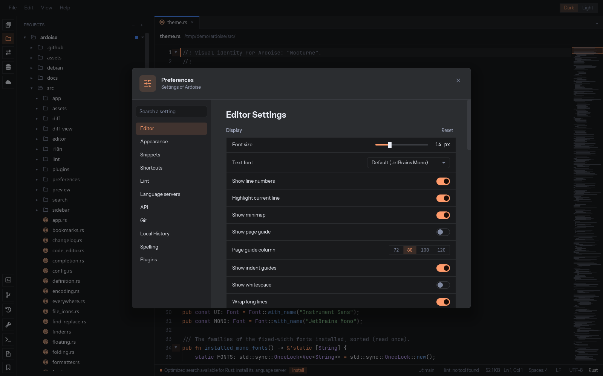

PréférencesPreferences
Où trouver chaque réglage, et comment le remettre à zéro.Where to find each setting, and how to reset it.
Ouvrir les PréférencesOpening the Preferences
Fichier › Préférences…. En haut, un champ de recherche trouve un réglage par son libellé ou son bloc (accents et majuscules sont sans importance). Chaque bloc de réglages qui a des valeurs par défaut a un bouton Réinitialiser.
File › Preferences…. At the top, a search box finds a setting by its label or block (accents and capitals do not matter). Every block of settings that has defaults has a Reset button.


La fenêtre des Préférences ouverte, le champ de recherche en haut et la page Éditeur affichée.The Preferences window open, the search box at the top and the Editor page showing.
Capture à venirScreenshot to comeLes pagesThe pages
| Page / blocPage / block | Ce qu'on y règleWhat you set there |
|---|---|
| Éditeur — AffichageEditor — Display | Taille et police du texte (choisie parmi les polices à chasse fixe installées), numéros de ligne, retour à la ligne, colonne guide, langue de l'interface (français / anglais).Text size and font (chosen among installed fixed-width fonts), line numbers, word wrap, guide column, interface language (English / French). |
| Éditeur — Indentation, SaisieEditor — Indentation, Typing | Largeur de tabulation, retrait automatique, fermeture des parenthèses et guillemets.Tab width, auto-indent, bracket and quote completion. |
| Éditeur — ComplétionEditor — Completion | Ouverture automatique ou au raccourci de la liste de complétion.Whether the completion list opens by itself or only with the shortcut. |
| Éditeur — FichiersEditor — Files | Enregistrement automatique, suppression des espaces de fin et retour final à l'enregistrement, encodage et fins de ligne des nouveaux fichiers.Automatic saving, trailing whitespace and final line break on save, encoding and line endings of new files. |
| Éditeur — Rechercher partoutEditor — Search everywhere | Comportement de la recherche et abréviations données aux actions.Search behavior and abbreviations given to actions. |
| ApparenceAppearance | Thème clair / sombre, contraste élevé.Light / dark theme, high contrast. |
| Serveurs de langageLanguage servers | Installer ou retirer un serveur par langage ; la complétion s'y règle aussi.Install or remove a server per language; completion is set there too. |
| Git, OrthographeGit, Spelling | « Masquer ce que Git ignore » est sur la page Git ; la langue du dictionnaire est sur la page Orthographe, qui liste les dictionnaires installés et comment en ajouter.“Hide what Git ignores” is on the Git page; the dictionary language is on the Spelling page, which lists installed dictionaries and how to add more. |
| SnippetsSnippets | Écrire, activer, désactiver ou supprimer un snippet.Write, turn on or off, or delete a snippet. |
| RaccourcisShortcuts | Tous les raccourcis, regroupés par thème, avec recherche par libellé ou par touches. Voir Raccourcis clavier.Every shortcut, grouped by theme, with search by label or keys. See Keyboard shortcuts. |
| PluginsPlugins | Installer et retirer les plugins, avec recherche ; lier un dossier pour développer un plugin ; réglages de chaque plugin.Install and remove plugins, with search; link a folder to develop a plugin; each plugin's settings. |
| Projets, Scratch, Dossiers approuvés, Historique, Panneaux latérauxProjects, Scratch, Trusted folders, History, Side panels | Les listes conservées par Ardoise : dossiers approuvés (cesser de faire confiance), fichiers récents, historique de recherche et de remplacement, machines distantes récentes — avec « Effacer ».The lists Ardoise keeps: trusted folders (stop trusting one), recent files, search and replace history, recent remote machines — with Clear. |
Thème et apparenceTheme and appearance
Basculer du thème sombre au thème clair dans Préférences › Apparence, puis activer le contraste élevé.Switch from the dark to the light theme in Preferences › Appearance, then turn on high contrast.
Vidéo à venirVideo to come